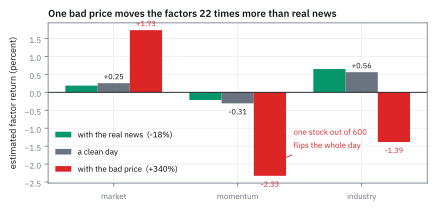
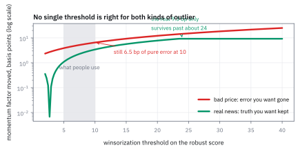
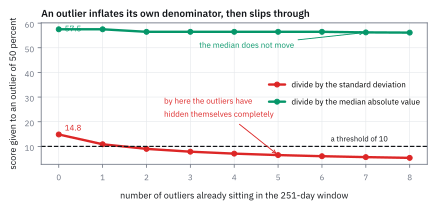
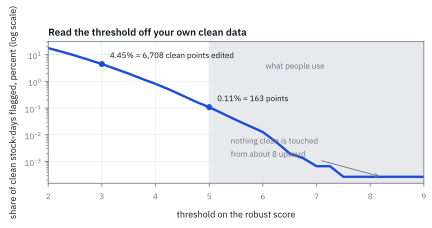

27.5 Winsorization: Which Outliers to Keep
ค่าประหลาดมีสองชนิดที่หน้าตาเหมือนกัน ราคาผิดต้องแก้ที่ต้นทาง ข่าวจริงต้องเก็บไว้ เพราะ factor return คือผลตอบแทนของพอร์ตที่ถือหุ้นตัวนั้นจริง winsorization เป็นแค่ตาข่ายชั้นสุดท้าย และต้องวัดความประหลาดด้วยตัวหารที่ค่าประหลาดดันไม่ขึ้น
จักรวาล 600 ตัวของบทนี้ (หุ้นแปดตัวของ 27.1 ซ้ำ 75 ชุด) เปิดการ winsorize ไว้ที่คะแนนความประหลาด 10 วันนี้มีสองเรื่องที่หุ้นธนาคารตัวที่ 5 ชุดหนึ่ง: เรื่อง A หุ้นลง 18% เพราะกำไรต่ำกว่าคาด เรื่อง B ข้อมูลบอกว่าหุ้นขึ้น 340% เพราะผู้ให้ข้อมูลยังไม่ปรับการรวมหุ้นห้าหุ้นเป็นหนึ่ง ระบบจะทำอะไรกับสองค่านี้ และผลที่ได้ถูกไหม?
ลองตอบก่อนเปิดเฉลย
ทั้งคู่เกินเกณฑ์ (คะแนน 14.71 และ 109.83) จึงถูกดึงลงมาที่เกณฑ์ทั้งคู่ และผิดทั้งคู่ เรื่อง B เหลือความผิดใน momentum factor 4.22 bp จาก 101.00 bp ช่วยได้ 95.8% แต่ทางที่ถูกคือปรับการรวมหุ้น ได้ผลตอบแทนจริง −12% ซึ่งคะแนน 9.48 ไม่ถูกแตะ เรื่อง A ถูกตัดเหลือ −12.62% momentum ขยับ −3.83 bp แทน −5.43 bp ที่เกิดจริง ข้อมูลจริงหายไป 29.5% และรายงานบอกผลตอบแทนของพอร์ตที่ไม่มีใครถือ
สิ่งที่เราจะสร้าง
สามหัวข้อที่ผ่านมาสมมติว่าผลตอบแทนที่ป้อนเข้า regression ของ 27.1 สะอาด แต่ข้อมูลจริงมีค่าประหลาดเสมอ บางค่าคือข้อผิดพลาด (ราคาที่ยังไม่ปรับ corporate action, ราคาหลุดจากการซื้อขายไม่กี่หุ้น) บางค่าคือเหตุการณ์จริงที่สำคัญที่สุดของปี และระบบที่ตัดทั้งสองแบบเหมือนกันจะผิดทั้งสองทาง
ลำดับคือ คิดว่าค่าหนึ่งตัวขยับ factor return เท่าไรด้วยพอร์ตของ 27.1 ตั้งคะแนนความประหลาดที่ทนทาน ดูว่าการดึงลงมาที่เกณฑ์ช่วยกรณีหนึ่งและทำร้ายอีกกรณีเท่าไร แก้ที่ต้นทาง ดูว่าทำไมตัวหารต้องเป็น median เลือกเกณฑ์จากข้อมูลที่สะอาด และจบที่เหตุผลว่าทำไมข่าวจริงห้ามแตะ
ศัพท์ที่ใช้ในหัวข้อนี้
- Outlier
- ค่าที่ห่างจากปกติมาก เป็นคำกลางที่ยังไม่ตัดสินว่าเป็นข้อผิดพลาดหรือของจริง
- Winsorization
- ดึงค่าที่เกินเกณฑ์ให้กลับมาอยู่ที่เกณฑ์พอดีแทนการลบทิ้ง จำนวนข้อมูลจึงไม่หาย แต่ขนาดของค่านั้นหาย
- Robust score
- ขนาดของ log return วันนี้หารด้วย median ของขนาด log return ในอดีต ใช้แทน z-score เพราะตัวหารไม่ถูกค่าประหลาดดึงขึ้น
- Corporate action
- สิ่งที่บริษัททำกับหุ้นของตัวเอง เช่นแตกหุ้น รวมหุ้น จ่ายปันผลพิเศษ ราคาต่อหุ้นกระโดดโดยมูลค่าไม่เปลี่ยน ถ้าผู้ให้ข้อมูลไม่ปรับ ผลตอบแทนจะผิด
- Estimation universe
- ชุดหุ้นที่ใช้ประมาณ model ด่านแรกที่กรองหุ้นเล็กซื้อขายน้อยและหุ้นที่กำลังถูกถอดออกจากตลาด ก่อนจะถึงขั้นจัดการค่าประหลาด
- Audit trail
- บันทึกว่าข้อมูลตัวไหนถูกแก้ วันไหน ค่าเดิมกับค่าใหม่คืออะไร เพราะอะไร ต้องมีทุกครั้งที่แตะข้อมูล
สัญลักษณ์และหน่วย
| สัญลักษณ์ | ความหมาย | หน่วย |
|---|---|---|
| $r_{i,t}$ | ผลตอบแทนของหุ้น $i$ ในวัน $t$ | ทศนิยม |
| $s_i,\ d_{i,t}$ | median ของ $\lvert\ln(1+r)\rvert$ ในอดีต และคะแนนความประหลาด | ทศนิยม, ไม่มีหน่วย |
| $d_{\max}$ | เกณฑ์ที่เกินแล้วถูกดึงลง | ไม่มีหน่วย |
| $H_{ki}$ | น้ำหนักของหุ้น $i$ ในพอร์ตของ factor $k$ (27.1) | ไม่มีหน่วย |
| $\Delta\hat f_k$ | การขยับของ factor return ที่ประมาณได้ | bp (0.01%) |
| $\mathrm{rms}_k$ | รากของค่าเฉลี่ยกำลังสองของหน้าต่าง เมื่อมีค่าประหลาดเก่า $k$ ตัว | ทศนิยม |
ขั้นที่ 1 — ค่าหนึ่งตัวขยับ factor return เท่าไร
ก่อนตัดสินใจว่าจะทำอะไรกับค่าประหลาด ต้องรู้ว่ามันทำอะไรกับ factor return 27.1 บอกว่า $\hat{\mathbf f}=\mathbf H\mathbf r$ เป็นเชิงเส้น เปลี่ยนผลตอบแทนหุ้นตัวเดียวจึงขยับ factor แต่ละตัวเท่ากับน้ำหนักของหุ้นนั้นในพอร์ตของ factor คูณขนาดที่เปลี่ยน ในวันปกติหุ้นธนาคารตัวที่ 5 ทุกชุดได้ 0.25% ตามข้อมูลของ 27.1 และ factor return คือค่าของทาง C ใน 27.1 เป๊ะ (momentum 0.4741%) เพราะข้อมูลที่ซ้ำ 75 ชุดให้คำตอบเดิม
0.22295 คือน้ำหนักของหุ้นตัวที่ 5 ในพอร์ต momentum ของ 27.1 เมื่อหุ้นแบบนี้มี 75 ตัว แต่ละตัวถือหนึ่งใน 75 ของน้ำหนักนั้น เรื่อง A ขยับ momentum −5.43 bp และขยับ banks −11.69 bp (น้ำหนัก $0.4806/75$) ซึ่งเป็นการขยับที่ควรเกิด พอร์ตที่ถือหุ้นนั้นเจ็บจริง
เรื่อง B หุ้นหนึ่งตัวจาก 600 ดัน momentum จาก 0.4741% เป็น 1.4841% และ banks ขึ้น 217.70 bp อัตราส่วนระหว่างสองเรื่องคือ $3.3975/0.1825=18.62$ พอดี เพราะทุกอย่างเป็นเชิงเส้นในผลตอบแทนดิบ น้ำหนักใน regression มาจากความผันผวนของเมื่อวาน ไม่ได้ขยับตามค่าประหลาดของวันนี้
Figure 27.5a — หุ้นตัวเดียวจาก 600 ตัว พลิก factor return ทั้งวัน

รูปนี้มาจาก model อีกตัว: หุ้น 600 ตัว factor สามตัว (market, momentum ที่สุ่มจาก Normal, industry ที่ครอบคลุมราว 18% ของหุ้น) ความผันผวนเฉพาะตัว 1.2% ถึง 3.0% (numpy seed 37) และค่าประหลาดใส่ที่หุ้นลำดับที่ 8
แท่งเทาคือ factor return ของวันปกติ (+0.25%, −0.31%, +0.56%) แท่งเขียวคือเมื่อหุ้นนั้นลง 18% ซึ่งแทบไม่ต่างจากแท่งเทา แท่งแดงคือเมื่อข้อมูลบอก +340%: +1.73%, −2.33% และ −1.39% ป้ายบอกว่าหุ้นหนึ่งตัวจาก 600 พลิกทั้งวัน
ชื่อรูปบอก 22 เท่า ซึ่งเป็นอัตราส่วนของ model นั้น ตัวเลขนี้เท่ากับอัตราส่วนของการเปลี่ยนผลตอบแทนดิบ ไม่ใช่ของ log return ในหน้านี้อัตราส่วนเดียวกันคือ 18.62
ขั้นที่ 2 — คะแนนความประหลาดที่ทนทาน
ต้องมีตัวเลขที่บอกว่าค่าไหนประหลาดสำหรับหุ้นตัวนั้น นี่คือนิยามของคะแนน: ขนาดของ log return วันนี้หารด้วย median ของขนาด log return ในอดีต (ไม่รวมวันนี้) สมมติว่าวันปกติของหุ้นตัวที่ 5 เป็น Normal ที่ความผันผวน 2.0% ต่อวัน median ของขนาดคือ 0.6745 เท่าของความผันผวน เพราะ $P(\lvert Z\rvert\le0.6745)=0.5$
ใช้ log เพราะความสมมาตร ผลตอบแทน −50% กับ +100% คือการเคลื่อนไหวขนาดเท่ากันคนละทิศ ใน log ทั้งคู่มีขนาด 0.6931 แต่ในผลตอบแทนดิบตัวหนึ่งเป็นสองเท่าของอีกตัว
ใช้ median ของอดีตเพราะค่าประหลาดเก่าดันมันไม่ขึ้น (ขั้นที่ 5) และไม่รวมวันนี้เพราะวันที่ทั้งตลาดเหวี่ยง ตัวหารที่รวมวันนี้จะโตตามแล้วค่าประหลาดจะรอด
ค่าปกติ 0.25% ได้คะแนน 0.19 ข่าวจริงได้ 14.71 ราคาผิดได้ 109.83 สองเรื่องต่างกันเกือบ 7.5 เท่า แต่เกณฑ์ที่ใช้กันในทางปฏิบัติ (5 ถึง 10) ต่ำกว่าทั้งคู่
ขั้นที่ 3 — ดึงลงมาที่เกณฑ์: ช่วยเรื่องหนึ่ง ทำร้ายอีกเรื่อง
winsorize คือแทนค่าที่คะแนนเกิน $d_{\max}$ ด้วยผลตอบแทนที่คะแนนเท่ากับ $d_{\max}$ พอดี กลับ log แล้วได้เพดานสองข้าง จากนั้นใช้สูตรของขั้นที่ 1 กับค่าที่ถูกดึงลง
เกณฑ์เดียวกันลบความเสียหายของราคาผิดไป 95.8% แต่ยังเหลือความผิดล้วน ๆ 4.22 bp และทิ้งข้อมูลจริงของข่าวไป 29.5% (เก็บไว้ 70.5%) เพราะมันไม่รู้ว่าค่าไหนจริงค่าไหนผิด มันรู้แค่ว่าค่าไหนใหญ่
ลดเกณฑ์เป็น 5 เพดานเป็น +6.98% กับ −6.52% ราคาผิดเหลือ 2.00 bp (ลบไป 98.0%) แต่ข่าวจริงเหลือแค่ 37.1% เกณฑ์ที่ข่าวจริงรอดไม่ถูกแตะต้องสูงกว่า 14.71 และที่ราคาผิดรอดทั้งก้อนต้องสูงกว่า 109.83 ไม่มีเกณฑ์ไหนถูกกับทั้งสองเรื่อง
Figure 27.5b — เกณฑ์เดียวกันช่วยเรื่องหนึ่ง ทำร้ายอีกเรื่อง

model ของ Figure 27.5a แกนนอนคือเกณฑ์ 2 ถึง 40 แกนตั้งคือขนาดที่ momentum ขยับเป็น bp บนสเกล log เส้นแดงคือราคาผิด +340% (ความผิดที่อยากลบ) เส้นเขียวคือข่าวจริง −18% (ความจริงที่อยากเก็บ) แถบเทา 5 ถึง 10 มีป้ายว่า “what people use”
ป้ายแดงบอกว่าที่เกณฑ์ 10 ยังเหลือความผิด 6.5 bp ป้ายเขียวบอกว่าข่าวจริง 9.3 bp รอดทั้งก้อนเมื่อเกณฑ์เกินราว 24 ซึ่งแปลว่าในการจำลองนั้น median ของขนาดผลตอบแทนหุ้นตัวนั้นราว $0.198/24\approx0.83\%$ รูปเดียวกับขั้นที่ 3: ไม่มีเกณฑ์ไหนถูกกับทั้งสองเส้น
ขั้นที่ 4 — แก้ที่ต้นทาง: ปรับการรวมหุ้นแล้วใช้ค่าจริง
โจทย์ให้อะไรมาบ้าง: เรื่อง B บริษัทรวมหุ้นห้าหุ้นเป็นหนึ่งหุ้น (reverse split 1 ต่อ 5) ราคาต่อหุ้นจึงควรคูณ 5 โดยมูลค่าไม่เปลี่ยน ผู้ให้ข้อมูลรายงานราคาปิดวันนี้เป็น 4.40 เท่าของเมื่อวานโดยไม่ปรับ ถ้าปรับให้ถูก ผลตอบแทนจริงคือเท่าไร และระบบจะทำอะไรกับมัน
คำตอบ: ราคาผิดซ่อนข่าวจริงอยู่ข้างใน หุ้นลงจริง 12% ในวันเดียวกับที่รวมหุ้น คะแนน 9.48 ต่ำกว่าเกณฑ์ 10 ระบบจึงไม่แตะ และ momentum ขยับ −3.64 bp ตามที่พอร์ตเจ็บจริง ถ้าปล่อยให้ winsorization จัดการ ได้ +4.22 bp ซึ่งผิดทั้งขนาดและทิศ
ตรวจเองใน 10 วินาที: $5\times0.88=4.40$ ราคาที่รายงานคือผลของการรวมหุ้น (คูณ 5) กับการลง 12% พร้อมกัน
ค่าประหลาดส่วนใหญ่แก้ได้ที่ต้นทางแบบนี้: ราคาที่ยังไม่ปรับ corporate action แก้ด้วยการปรับ ราคาหลุดจากการซื้อขายไม่กี่หุ้นในหุ้นสภาพคล่องดีแก้ด้วยการดูราคาทั้งช่วงแทนราคาสุดท้าย หุ้นเล็กที่ซื้อขายน้อย หุ้นที่กำลังถูกถอดหรือล้มละลายแก้ด้วยการไม่เอาเข้า estimation universe ตั้งแต่แรก เหลือแหล่งเดียวที่แก้ไม่ได้ และไม่ควรแก้ คือข่าวจริงที่ใหญ่
ขั้นที่ 5 — ทำไมตัวหารต้องเป็น median ไม่ใช่ความผันผวน
ทางลัดที่ใช้บ่อยคือ z-score: หารด้วยความผันผวนของอดีต ลองกับหน้าต่าง 251 วันของหุ้นตัวที่ 5 ที่วันปกติผันผวน 2.0% แต่มีค่าประหลาดเก่าขนาด +50% ติดอยู่ $k$ วัน แล้วให้คะแนนค่าประหลาด +50% ตัวใหม่ของวันนี้ ($\ln1.5=0.4055$) ความผันผวนของหน้าต่างวัดรอบศูนย์แบบ risk model (root mean square)
ค่าประหลาดเก่าหนึ่งตัวดันความผันผวนของหน้าต่างจาก 2.0% เป็น 3.25% สองตัวเป็น 4.13% แล้วค่าประหลาดใหม่ถูกหารด้วยตัวเลขที่พวกพ้องของมันดันขึ้นมา พอมีสองตัวในหน้าต่าง คะแนนตกเหลือ 9.81 ต่ำกว่าเกณฑ์ 10 และหลบรอดไปได้ ยิ่งหุ้นมีปัญหาข้อมูลบ่อย มันยิ่งมองไม่เห็นปัญหา
median ขยับแค่หนึ่งตำแหน่งต่อค่าประหลาดหนึ่งตัว ค่าประหลาดสองตัวใน 251 ค่าทำให้ median กลายเป็นค่าลำดับที่ 126 ของ 249 ค่าปกติแทน 251 ค่า สำหรับ Normal คือ 1.349% เป็น 1.362% คะแนนจึงเกือบเท่าเดิม 30.06 เป็น 29.78 นี่คือความหมายของคำว่าทนทาน
Figure 27.5c — ค่าประหลาดดันตัวหารของตัวเองขึ้น แล้วหลบรอด

หน้าต่าง 251 ค่าที่มีค่าปกติจาก Normal ความผันผวน 1.2% (numpy seed 2) กับค่า +50% จำนวน $k+1$ ตัว (ตัวที่ถูกให้คะแนนรวมอยู่ในหน้าต่างด้วย และใช้ผลตอบแทนดิบ ไม่ใช่ log)
แกนนอนคือ $k$ จำนวนค่าประหลาดอื่นในหน้าต่าง 0 ถึง 8 เส้นแดงคือ 0.50 หารด้วย SD ของหน้าต่าง เริ่มที่ 14.8 แล้วตกลงต่ำกว่าเส้นประที่ 10 เส้นเขียวคือ 0.50 หารด้วย median ของขนาด เริ่มที่ 57.5 และแทบไม่ขยับ ตัวเลขต่างจากขั้นที่ 5 เพราะความผันผวนและวิธีนับต่างกัน รูปแบบเหมือนกัน
ขั้นที่ 6 — เกณฑ์ควรอยู่ที่เท่าไร: ถามข้อมูลที่สะอาด
โจทย์ให้อะไรมาบ้าง: ถ้าข้อมูลสะอาดทั้งหมด เกณฑ์ $c$ จะแก้ข้อมูลดีไปกี่จุดต่อปีในจักรวาล 600 ตัว ปีละ 251 วัน (150,600 จุด) สองแบบ: ผลตอบแทนเป็น Normal และผลตอบแทนหางหนาแบบ Student t ที่ 4 degrees of freedom (สมมติ ตาม 25.2 ที่บอกว่าผลตอบแทนจริงหางหนากว่า Normal) ทั้งสองแบบปรับสเกลให้ median ของขนาดเท่ากัน median ของ $\lvert T_4\rvert$ คือ 0.7407
| $c$ | Normal | จุดต่อปี | $t_4$ | จุดต่อปี |
|---|---|---|---|---|
| 3 | 4.30% | 6,480 | 9.04% | 13,615 |
| 5 | 0.0745% | 112 | 2.08% | 3,128 |
| 8 | 0.0000068% | 0.01 | 0.406% | 612 |
| 10 | ราว 0 | 0 | 0.177% | 267 |
คำตอบ: ถ้าข้อมูลเป็น Normal เกณฑ์ 8 ขึ้นไปแทบไม่แตะข้อมูลดีเลย แต่ข้อมูลจริงหางหนา ที่เกณฑ์ 10 ยังแก้ข้อมูลที่ไม่ผิด 267 จุดต่อปี หรือราวหนึ่งจุดต่อวัน และที่เกณฑ์ 5 แก้ไป 3,128 จุด ช่วง 5 ถึง 10 ที่คนทำงานเลือกด้วยการลองผิดลองถูกจึงไม่ใช่ช่วงที่ “ไม่แตะอะไร” มันคือช่วงที่แตะไม่มากจนอ่านรายการได้ทุกวัน
ตรวจเองใน 10 วินาที: ที่ $c=3$ แบบ Normal $0.6745\times3=2.02$ และโอกาสที่ Normal เกิน 2.02 ทั้งสองข้างราว 4.3% ตามตาราง Normal ที่คุ้นเคย $0.0430\times150{,}600=6{,}480$
Figure 27.5d — เกณฑ์ไหนจึงเลิกแตะข้อมูลที่สะอาด

ข้อมูลจำลองหุ้น 600 ตัว 251 วันจาก Normal (numpy seed 37 ชุดเดียวกับ Figure 27.5a) คะแนนหารด้วย median ของแต่ละหุ้น
แกนนอนคือเกณฑ์ 2 ถึง 9 แกนตั้งคือเปอร์เซ็นต์ของจุดที่ถูกแก้บนสเกล log ป้ายบอก 4.45% หรือ 6,708 จุดที่เกณฑ์ 3 และ 0.11% หรือ 163 จุดที่เกณฑ์ 5 และตั้งแต่ราว 8 ขึ้นไปไม่แตะเลย ค่าคาดหมายของ Normal คือ 4.30% และ 0.0745% ส่วนต่างมาจาก median ที่วัดจากตัวอย่าง ข้อมูลในรูปเป็น Normal ซึ่งหางบางกว่าของจริง ตาราง $t_4$ ในขั้นที่ 6 แสดงว่าข้อมูลจริงยังถูกแตะที่เกณฑ์ 10
ขั้นที่ 7 — ตัดข่าวจริงทิ้ง คือรายงานผลตอบแทนของพอร์ตที่ไม่มีอยู่จริง
ทำไมข่าวจริงห้ามแตะ แม้จะดูเหมือนแค่ปรับเล็กน้อย? 27.1 บอกว่า factor return คือผลตอบแทนของ factor-mimicking portfolio ที่ซื้อได้จริง เทียบสิ่งที่พอร์ต momentum ได้จริงวันนั้นกับสิ่งที่รายงานหลัง winsorize
$f_{\rm port}$ คือผลตอบแทนของพอร์ต momentum ที่ถือหุ้นตัวนั้นด้วยน้ำหนัก 0.002973 จริง ๆ และเจ็บเต็ม 18% ส่วน $f_{\rm rep}$ คือตัวเลขที่ระบบรายงานหลังดึง −18% ขึ้นมาเป็น −12.62% ซึ่งไม่มีพอร์ตไหนในโลกได้
ส่วนต่าง 1.6 bp ต่อวันดูเล็ก แต่มันไปทางเดียวเสมอ: การตัดหางซ้ายของหุ้นที่ร่วงทำให้ factor ที่ถือหุ้นพวกนั้นดูดีกว่าความจริงทุกวันที่มีข่าวร้าย แล้วรายงานแยกกำไรขาดทุนของ 26.6 ก็ผิดตาม
คำถามที่ควรถามออกมาดัง ๆ
ถ้าการแก้ที่ต้นทางดีกว่า ทำไมยังต้อง winsorize? เพราะต้นทางพลาดได้เสมอ และราคาผิดหนึ่งตัวดัน momentum ได้ 101.00 bp ในวันเดียว winsorization คือตาข่ายที่ทำให้ความพลาดนั้นเหลือ 4.22 bp ระหว่างรอคนมาแก้ ถ้าทำงานต้นทางดี ตาข่ายนี้แทบไม่ทำงาน ซึ่งเป็นสัญญาณว่าระบบสุขภาพดี
ทำไมไม่ลบค่าประหลาดทิ้งไปเลย? ลบทิ้งก็คือการตั้งผลตอบแทนของหุ้นนั้นเป็นอย่างอื่นโดยไม่บอก regression ต้องมีค่าให้ทุกหุ้น การลบจึงเปลี่ยนพอร์ตของ factor ในวันนั้นแทน ปัญหาเดียวกับขั้นที่ 7
ความผิดที่ให้ตัวเลขผิดแบบเงียบ ๆ
แก้ข้อมูลโดยไม่บันทึกและไม่มีใครอ่าน: ที่เกณฑ์ 10 กับข้อมูลหางหนา ระบบแก้ข้อมูลที่ไม่ผิดราว 267 จุดต่อปี ปนกับราคาผิดจริง ถ้าไม่มีรายการให้คนอ่านทีละบรรทัด จะไม่มีทางรู้ว่าตัดข่าวจริงทิ้งไปเท่าไร
ใช้ความผันผวนเป็นตัวหาร: ค่าประหลาดเก่าสองตัวในหน้าต่างพอให้ค่าประหลาดใหม่ได้คะแนน 9.81 และหลบเกณฑ์ 10 หุ้นที่ข้อมูลแย่ที่สุดจึงถูกตรวจน้อยที่สุด
ใช้เกณฑ์เดียวกับทุกตลาด: ตารางในขั้นที่ 6 ขึ้นกับความหนาของหาง ตลาดที่หางหนากว่าจะถูกแก้ข้อมูลจริงมากกว่ามากที่เกณฑ์เดียวกัน ต้องรันตารางนั้นกับข้อมูลของแต่ละตลาดใหม่
ใช้ทำอะไรบนโต๊ะจริง
กฎสองข้อที่ทีม risk model ใช้: ข้อแรก รายงานทุกค่าที่ถูก winsorize ทั้งใน backtest และระบบจริง พร้อมชื่อหุ้น วันที่ ค่าเดิม ค่าใหม่ และคะแนน แล้วมีคนอ่านทีละบรรทัด ข้อสอง estimation universe มีแต่หุ้นที่สภาพคล่องพอและซื้อขายได้จริง ส่วนเกณฑ์เลือกจากตารางแบบขั้นที่ 6 ของข้อมูลตัวเอง ในช่วง 5 ถึง 10 ไม่ใช่ลอกตัวเลขมา
สามโจทย์ตรวจความเข้าใจ
1. หุ้นที่ median ของขนาด log return คือ 1.0% ลง 25% ในวันเดียว คะแนนเท่าไร และถ้า $d_{\max}=10$ ค่าที่ถูกดึงลงคือเท่าไร?
เฉลย
$\lvert\ln0.75\rvert=0.2877$ คะแนน $0.2877/0.01=28.77$ เกินเกณฑ์ ค่าที่ถูกดึงลงคือ $e^{-10(0.01)}-1=e^{-0.1}-1=-9.52\%$ ถ้าเป็นข่าวจริง ผลตอบแทนหายไปกว่าครึ่ง
2. ในจักรวาล 600 ตัวของหน้านี้ ถ้าหุ้นตัวที่ 1 ชุดหนึ่ง (น้ำหนักใน momentum 0.20034 ต่อแปดตัว ปกติได้ 1.20%) ถูกรายงานผิดเป็น +100% momentum ขยับเท่าไร?
เฉลย
น้ำหนักต่อชุด $0.20034/75=0.002671$ การเปลี่ยน $1.00-0.012=0.988$ momentum ขยับ $0.002671\times0.988=0.002639$ หรือ +26.39 bp จากค่าผิดตัวเดียว
3. ถ้าผลตอบแทนหางหนาแบบ $t_4$ เกณฑ์ 8 แก้ข้อมูลดีไปกี่จุดต่อวันในจักรวาล 600 ตัว?
เฉลย
$0.406\%\times150{,}600=612$ จุดต่อปี หารด้วย 251 วันได้ราว 2.44 จุดต่อวัน อ่านได้ทุกเช้า ถ้าเกณฑ์ 3 จะเป็น 13,615 จุดต่อปี หรือ 54 จุดต่อวัน ซึ่งไม่มีใครอ่านไหว
คำนวณซ้ำด้วย JavaScript
โค้ดนี้สร้าง $\mathbf H$ ของ 27.1 (ทาง C) คิดว่าค่าหนึ่งตัวในจักรวาล 600 ตัวขยับ factor เท่าไร คะแนนที่ทนทาน การ winsorize ที่เกณฑ์ 10 และ 5 การปรับการรวมหุ้น การเทียบตัวหารสองแบบ และสัดส่วนข้อมูลสะอาดที่ถูกแก้ทั้งแบบ Normal และ $t_4$ แล้วพิมพ์ตัวเลขหลักหนึ่งบรรทัด
const {sqrt, abs, exp, log, PI} = Math;
const T = A => A[0].map((_, j) => A.map(row => row[j]));
const mul = (A, B) => A.map(row => B[0].map((_, j) => row.reduce((s, a, k) => s + a * B[k][j], 0)));
function inverse(A) {
const n = A.length, M = A.map((row, i) => [...row, ...row.map((_, j) => (i === j ? 1 : 0))]);
for (let c = 0; c < n; c++) {
let p = c;
for (let i = c + 1; i < n; i++) if (abs(M[i][c]) > abs(M[p][c])) p = i;
if (abs(M[p][c]) < 1e-12) throw new RangeError('matrix is singular');
[M[c], M[p]] = [M[p], M[c]];
const v = M[c][c];
for (let j = 0; j < 2 * n; j++) M[c][j] /= v;
for (let i = 0; i < n; i++) if (i !== c) { const g = M[i][c]; for (let j = 0; j < 2 * n; j++) M[i][j] -= g * M[c][j]; }
}
return M.map(row => row.slice(n));
}
// The 27.1 model, way C (cap-weighted industry returns sum to zero): factor returns f = H r.
const industry = [0, 0, 0, 1, 1, 2, 2, 2], momentum = [1.2, -0.4, 0.6, -1.4, 0.9, -0.7, 0.3, -0.5];
const B = industry.map((g, i) => [1, g === 0 ? 1 : 0, g === 1 ? 1 : 0, g === 2 ? 1 : 0, momentum[i]]);
const sigma = [1.8, 2.2, 1.5, 2.6, 2.0, 2.4, 1.7, 2.1], cap = [300, 180, 220, 400, 150, 260, 340, 190];
const shares = [0, 1, 2].map(g => cap.filter((_, i) => industry[i] === g).reduce((a, b) => a + b, 0) / 2040);
const c = [0, ...shares, 0];
const BW = T(B).map(row => row.map((x, i) => x / (sigma[i] * sigma[i])));
const K = mul(BW, B).map((row, i) => [...row, c[i]]);
K.push([...c, 0]);
const H = mul(inverse(K).slice(0, 5).map(row => row.slice(0, 5)), BW);
const r = [1.20, 0.35, 0.90, -0.60, 0.25, -1.10, -0.40, -0.95].map(x => x / 100);
const fClean = H.map(row => row.reduce((s, h, i) => s + h * r[i], 0));
const copies = 75; // 600 stocks = 75 copies of the eight
// Step 1: one copy of stock i changes from its clean return to newReturn; factor moves in basis points.
function move(i, newReturn) {
if (!Number.isInteger(i) || i < 0 || i > 7) throw new RangeError('stock index must be 0 to 7');
if (!(newReturn > -1)) throw new RangeError('a return cannot be -100% or lower');
return H.map(row => row[i] / copies * (newReturn - r[i]) * 1e4);
}
// Step 2: robust score = |log(1 + r)| over the median absolute log return of the past.
function score(ret, s) {
if (!(ret > -1) || !(s > 0)) throw new RangeError('need a return above -100% and a positive scale');
return abs(log(1 + ret)) / s;
}
// Step 3: winsorise, i.e. pull the return back to the one whose score is exactly dmax.
function winsorise(ret, dmax, s) {
if (!(dmax > 0)) throw new RangeError('threshold must be positive');
if (score(ret, s) <= dmax) return ret;
return ret > 0 ? exp(dmax * s) - 1 : exp(-dmax * s) - 1;
}
// Normal upper tail by its continued fraction (x of 1 or more), the CDF by a series below 1, the inverse by bisection.
function normalTail(x) {
if (!(x >= 1)) return 1 - normalCdf(x);
let f = x;
for (let k = 60; k >= 1; k--) f = x + k / f;
return exp(-x * x / 2) / sqrt(2 * PI) / f;
}
function normalCdf(x) {
if (x < 0) return 1 - normalCdf(-x);
if (x >= 1) return 1 - normalTail(x);
let term = x, sum = x;
for (let k = 1; k < 60; k++) { term *= x * x / (2 * k + 1); sum += term; }
return 0.5 + exp(-x * x / 2) / sqrt(2 * PI) * sum;
}
function normalQuantile(p) {
if (!(p > 0 && p < 1)) throw new RangeError('probability must be strictly between 0 and 1');
let lo = -10, hi = 10;
for (let i = 0; i < 200; i++) { const mid = (lo + hi) / 2; if (normalCdf(mid) < p) lo = mid; else hi = mid; }
return (lo + hi) / 2;
}
const q75 = normalQuantile(0.75), vol = 0.02, s5 = q75 * vol, stock = 4; // stock 5, a bank
const w10 = {up: winsorise(3.40, 10, s5), down: winsorise(-0.18, 10, s5)}, w5 = {up: winsorise(3.40, 5, s5), down: winsorise(-0.18, 5, s5)};
const mom = (ret) => move(stock, ret)[4];
// Step 5: a 251-day window of clean days (vol 2%) holding k old +50% outliers; score a new +50% day.
const L50 = log(1.5);
function windowScores(k) {
if (!Number.isInteger(k) || k < 0 || k > 125) throw new RangeError('k must be a whole number from 0 to 125');
const rms = sqrt(((251 - k) * vol * vol + k * L50 * L50) / 251);
const median = normalQuantile(0.5 + 0.5 * 125.5 / (251 - k)) * vol; // the 126th value is still a clean one
return {k, rms, z: L50 / rms, median, d: L50 / median};
}
// Step 6: share of clean points flagged by threshold c; Normal, and Student t with 4 degrees of freedom.
const tTail4 = t => 1 - t * (t * t + 6) / (t * t + 4) ** 1.5; // P(|T| > t), 4 degrees of freedom
let lo = 0, hi = 5;
for (let i = 0; i < 200; i++) { const mid = (lo + hi) / 2; if (tTail4(mid) > 0.5) lo = mid; else hi = mid; }
const m4 = (lo + hi) / 2, points = 600 * 251;
const flagged = cc => ({c: cc, normal: 2 * normalTail(q75 * cc), t4: tTail4(m4 * cc)});
const real = mom(-0.18), bad = mom(3.40);
console.log(JSON.stringify({
fClean, hColumn: H.map(row => row[stock]), perCopy: H[4][stock] / copies,
moves: {real: move(stock, -0.18), bad: move(stock, 3.40), fixed: move(stock, 4.40 / 5 - 1)}, ratio: bad / real,
momentumAfter: {real: fClean[4] * 100 + real / 100, bad: fClean[4] * 100 + bad / 100},
q75, s5, scores: {clean: score(r[stock], s5), real: score(-0.18, s5), bad: score(3.40, s5), fixed: score(4.40 / 5 - 1, s5)},
logs: {real: log(0.82), bad: log(4.40), fixed: log(0.88), half: log(0.5), double: log(2)},
w10: {...w10, bad: mom(w10.up), real: mom(w10.down), removed: 1 - mom(w10.up) / bad, kept: mom(w10.down) / real},
w5: {...w5, bad: mom(w5.up), real: mom(w5.down), removed: 1 - mom(w5.up) / bad, kept: mom(w5.down) / real},
fixedReturn: 4.40 / 5 - 1, fixedMove: mom(4.40 / 5 - 1),
reported: fClean[4] * 100 + mom(w10.down) / 100, portfolio: fClean[4] * 100 + real / 100,
window: [0, 1, 2, 3].map(windowScores), m4, points,
flagged: [3, 5, 8, 10].map(flagged).map(f => ({...f, normalPoints: f.normal * points, t4Points: f.t4 * points})),
exercises: {one: {score: score(-0.25, 0.01), capped: winsorise(-0.25, 10, 0.01)}, two: {perCopy: H[4][0] / copies, move: move(0, 1.00)[4]},
three: {perDay: tTail4(m4 * 8) * points / 251, atThree: tTail4(m4 * 3) * points / 251}}
}));ที่มาที่ไป
ชื่อ winsorization มาจาก Charles Winsor นักชีวสถิติที่เสนอการดึงค่าสุดขั้วเข้าหาค่าข้างเคียงแทนการทิ้ง และ John Tukey เป็นผู้ตั้งชื่อตามเขา การใช้ median ของขนาดเป็นตัวหารมาจากสายงาน robust statistics ที่ Frank Hampel และ Peter Huber พัฒนาในทศวรรษ 1960–1970 ซึ่งถามว่าตัวประมาณทนต่อข้อมูลที่ผิดได้กี่เปอร์เซ็นต์ median ทนได้เกือบครึ่ง ส่วนค่าเฉลี่ยและ SD ทนไม่ได้แม้ค่าเดียว
ข้อจำกัด: สี่แหล่งของค่าประหลาด และวิธีที่ถูกกับแต่ละแหล่ง
| แหล่ง | หน้าตา | วิธีที่ถูก | ผลถ้าใช้ winsorize อย่างเดียว |
|---|---|---|---|
| corporate action ที่ยังไม่ปรับ | คะแนนสูงมาก เช่น 109.83 | ปรับราคาแล้วใช้ค่าจริง (−12%) | เหลือความผิด 4.22 bp และทิศผิด |
| ราคาหลุดจากการซื้อขายไม่กี่หุ้น | คะแนนสูง แล้วหายในนาทีถัดมา | ดูราคาทั้งช่วง ไม่ใช่ราคาสุดท้าย | ดึงลงได้ แต่ยังเหลือความผิด |
| หุ้นเล็ก ซื้อขายน้อย กำลังถูกถอด | คะแนนสูงบ่อย | ไม่เอาเข้า estimation universe | แก้ทีละวันไม่จบ |
| ข่าวจริงที่ใหญ่ | คะแนนราว 10 ถึง 30 | เก็บไว้ทั้งหมด | factor return ไม่ใช่ผลตอบแทนของพอร์ตไหน |
สิ่งที่ควรตอบได้หลังอ่าน
- ค่าหนึ่งตัวขยับ factor ตามน้ำหนักของมันใน factor-mimicking portfolio: ราคาผิด +340% ดัน momentum 101.00 bp ข่าวจริง −18% ขยับ −5.43 bp อัตราส่วนเท่ากับการเปลี่ยนของผลตอบแทนดิบ 18.62
- คะแนนที่ทนทานคือ $\lvert\ln(1+r)\rvert$ หารด้วย median ของอดีต ข่าวจริงได้ 14.71 ราคาผิดได้ 109.83 ถ้าใช้ความผันผวนเป็นตัวหาร ค่าประหลาดเก่าสองตัวพอให้ตัวใหม่หลบเกณฑ์ 10 (9.81)
- winsorize ที่ 10 ลบความเสียหายของราคาผิด 95.8% แต่ทิ้งข่าวจริง 29.5% ไม่มีเกณฑ์ไหนถูกกับทั้งสองเรื่อง
- ทางแก้จริงอยู่ที่ต้นทาง: ปรับการรวมหุ้นแล้วได้ −12% ที่คะแนน 9.48 ไม่ถูกแตะ และคัด estimation universe ให้มีแต่หุ้นที่ซื้อขายได้จริง
- เลือกเกณฑ์จากข้อมูลสะอาดของตัวเอง หางหนาแบบ $t_4$ ยังถูกแตะ 267 จุดต่อปีที่เกณฑ์ 10 จึงต้องบันทึกและอ่านทุกค่าที่ถูกแก้
นี่คือหัวข้อสุดท้ายของบทที่ 27 และของหนังสือ บทนี้เริ่มจากคุณสมบัติบริษัทกับผลตอบแทนดิบ แล้วสร้าง risk model ครบทุกชิ้น: factor return รายวัน covariance ของ factor ตัวคูณระยะสั้น covariance ของส่วนเฉพาะตัว และข้อมูลที่สะอาดพอจะเชื่อได้ หน้าบทที่ 27 รวบทั้งหมดเป็นโจทย์เดียว